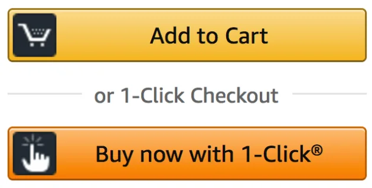

6. Diseñar para facilitar el acceso, no únicamente para comunicar
Una marca no crece únicamente porque sea recordada.
También debe resultar fácil actuar.
En la literatura del Ehrenberg-Bass Institute esto se relaciona con la disponibilidad física: facilitar que una marca pueda encontrarse y adquirirse cuando surge la necesidad.
El PASE no vende un producto comercial, por lo que el concepto debe adaptarse.
En su caso significa:
cuando un estudiante necesite al PASE, acceder al PASE debe resultar sencillo.
Aplicado al PASE
Esto afecta directamente a:
• códigos QR;
• formularios;
• horarios;
• ubicación;
• enlaces;
• instrucciones;
• contactos;
• procesos de inscripción;
• información disponible en redes;
• presencia física dentro de la universidad.
Una excelente campaña pierde valor si después el estudiante debe investigar durante diez minutos cómo participar.
Ejemplo
Amazon convirtió la reducción de fricción en una ventaja fundamental de su experiencia: encontrar, seleccionar y comprar requiere pocos pasos.

El PASE debería aplicar la misma lógica al acceso a sus servicios.
Criterio operativo
Para cada comunicación preguntar:
Después de interesarse, ¿cuántas decisiones y pasos necesita realizar el estudiante para acceder?
Reducir los pasos innecesarios.
Referencias
- Romaniuk, J., & Dunstone, L. (s. f.). Sink or soar? Standing out in the e-commerce world. Ehrenberg-Bass Institute for Marketing Science. https://marketingscience.info/news-and-insights/sink-or-soar-standing-out-in-the-e-commerce-world